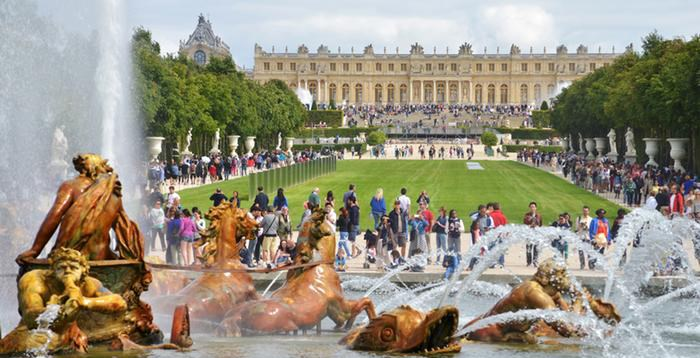
Fransa: Versailles Sarayı
Paris yakınlarındaki Versailles Sarayı, bin 800 odası ile Avrupa’nın en büyük sarayları arasında yer alıyor.
Sarayın yapımına 1677 yılında XIV. Ludwig döneminde başlanmıştı. Avrupa’daki birçok hükümdar, kendi saraylarının yapımında Versailles Sarayı’nı örnek aldı.
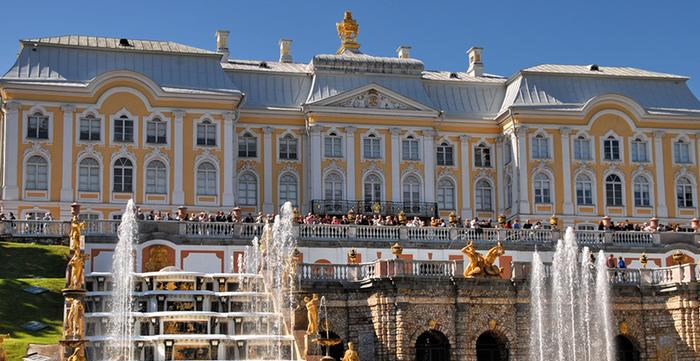
Rusya: Peterhof Sarayı
Rusya’nın Versailles’ı olarak kabul edilen Petershof Sarayı, St. Petersburg’un batısında yer alıyor. 1723 yılında açılan Finlandiya Körfezi‘nin güney kıyısındaki saray, Çar I. Peter tarafından yazlık rezidans olarak kullanılmıştı.
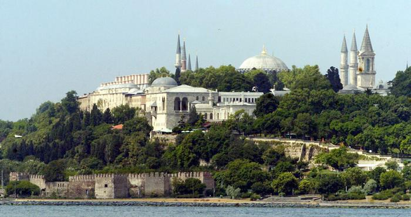
Türkiye: Topkapı Sarayı
Topkapı Sarayı 15. yüzyılın ortalarından itibaren çok sayıda Osmanlı padişahına ev sahipliği yaptı. Fatih Sultan Mehmed’in 1453 yılında İstanbul’u fethetmesinden sonra 1460 yıllarında yapımına başlanan ve 1478 yılında tamamlanan Saray 700 bin metrakarelik bir alan üzerine kurulu. Dört avluya açılan sarayda yaklaşık 5 bin kişi hem yaşıyor hem de çalışıyordu.
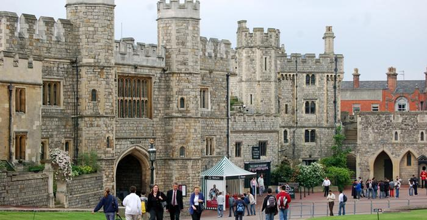
İngiltere: Windsor Şatosu
Britanya monarşisinin resmi ana rezidanslarından biri olan Windsor, dünyanın aralıksız yaşanılan en eski şatosu. 1078 yılında yapımına başlanan Saray, garnizon ve hapishane olarak da kullanıldı. Saray, İngiltere Kraliçesi tarafından hala kullanılıyor.
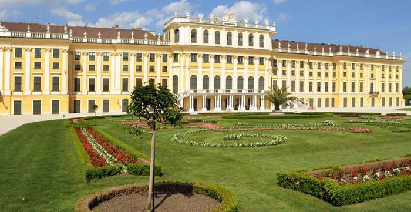
Avusturya: Schönnbrunn Sarayı
Kraliçe Maria Theresia, Viyana’daki Schönnbrunn Sarayı’nı yaklaşık 300 yıl önce Avrupa’daki avlu yaşamının merkezi haline getirdi.
Avusturya-Macaristan İmparatorluğu’nun görkemli yapılarından olan bu saray, günümüzde de yılda ortalama 3 milyon turist tarafından ziyaret ediliyor.
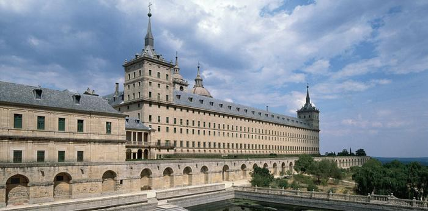
İspanya: El Escorial
Madrid yakınlarında saray, manastır ve kütüphaneden oluşan bu yapı kompleksi için İspanyollar ‘dünyanın sekizinci harikası’ diyor. 207 metre uzunluğunda ve 161 metre genişliğindeki yapı, dünyanın en büyük Rönesans dönemi eseri. Çoğu İspanyol kralının anıt mezarı da burada bulunuyor.
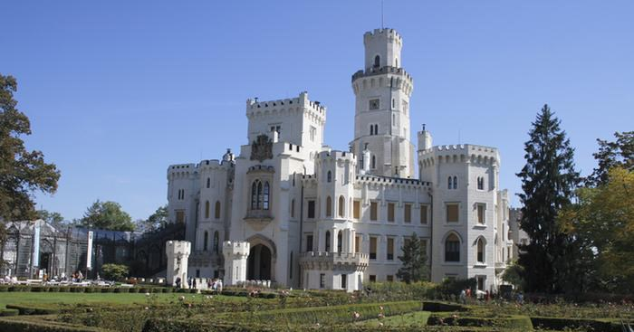
Çek Cumhuriyeti: Frauenberg Sarayı
Eski Bohemya derebeylerinin ikametgahlarından olan saray, Çek Cumhuriyeti’nin en sevilen yapılarından biri. Turistlere sergilemekten gurur duyulan en önemli eserler ise 17’nci yüzyıldan kalma duvar kağıtları.
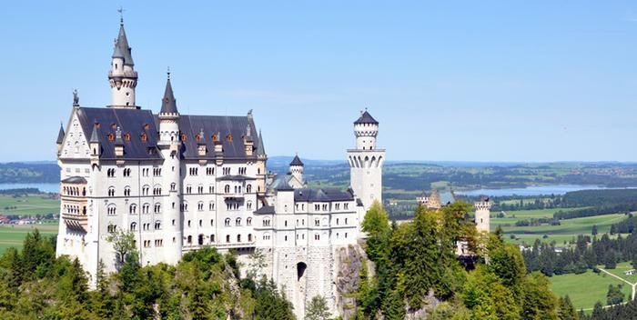
Almanya: Neuschwanstein Şatosu
Bavyera Kralı II. Ludwig tarafından yaptırılan şato, 1886 yılında açıldı. Her ne kadar II. Ludwig sarayın açılışını görememiş olsa da Masal Sarayı olarak da adlandırılan bu yapı Almanya’nın Thüringen eyaletinde ziyaretçileri
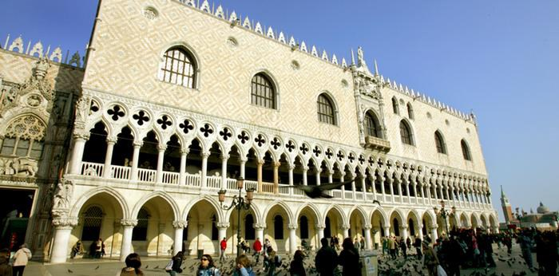
İtalya: Doge Sarayı
Doge Sarayı, tarihi Venedik Cumhuriyeti’nin politik kurumlarına ev sahipliği yaptı. Görkemli yapı, İtalya’nın deniz ve ticaret gücünün bir sembolü niteliğindeydi. Gotik tarzda yapılmış saray birçok yangında zarar gördü fakat arka arkaya yeniden inşa edildi. Saray, şu anda müze olarak kullanılıyor.
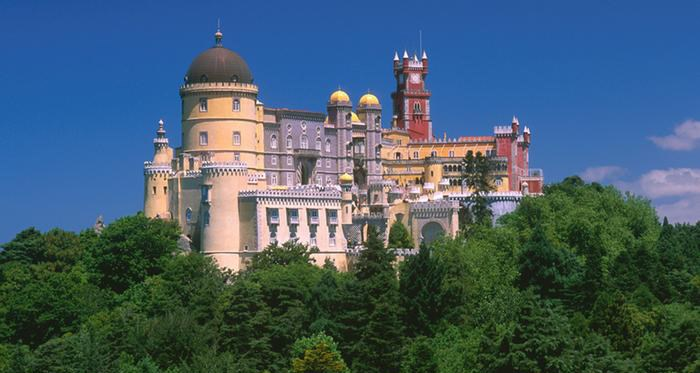
Portekiz: Pena Sarayı
Sanat tarihçileri, bu yapıda birçok stilin kiç bir biçimde birbirine karıştığı görüşünde. Bazıları, sarayın Disneyland’ı andırdığını düşünüyor. Fakat turistler, Sintra kentindeki saraya çok ilgi gösteriyor. Saray, 14’üncü yüzyıldan itibaren Portekiz krallarının yazlık rezidansı olarak kullanıldı.
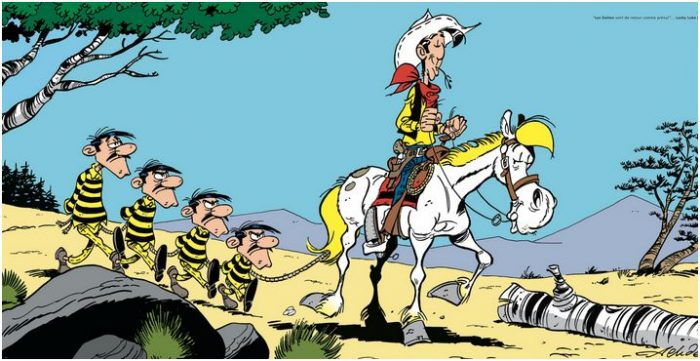
redkit
ağaçkakan woody
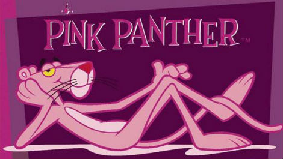
pembe panter
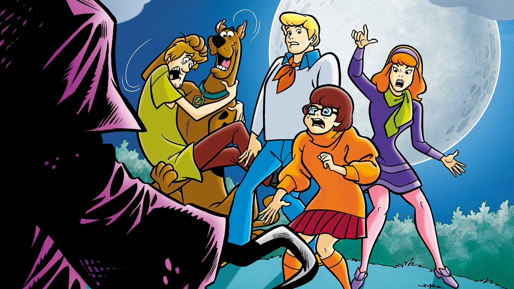
scooby doo
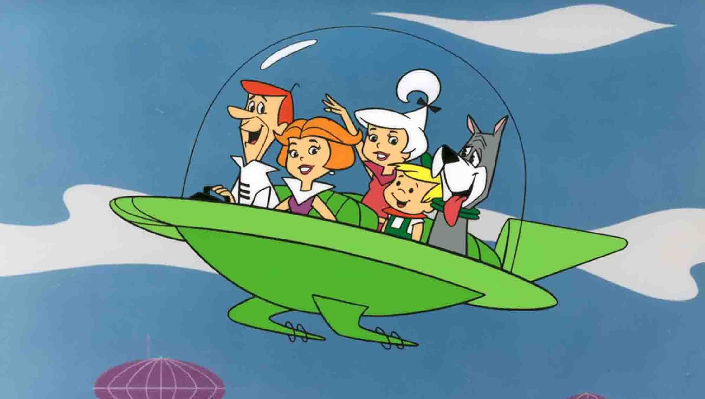
jetgiller
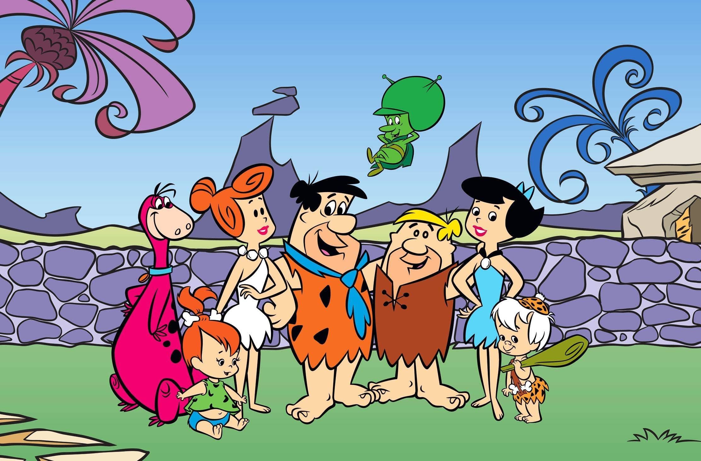
taş devri

mask
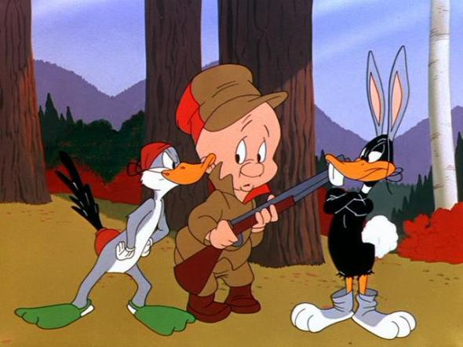
bugs bunny